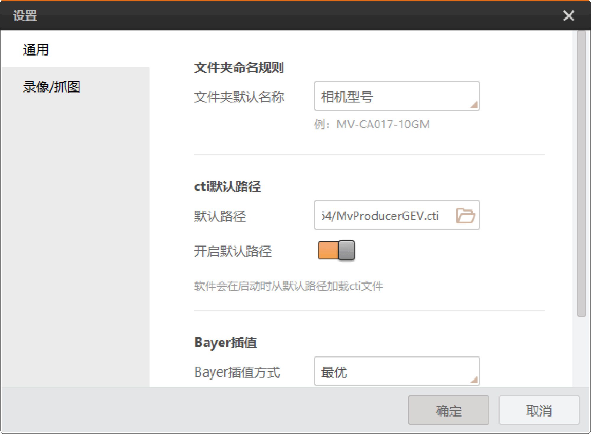

通用包含文件夹命名规则和cti默认路径的相关设置，如下图所示。

连接相机状态下，可选择相机型号或相机序列号作为配置文件导出时存储的文件夹默认名称。
可设置使用GenTL标准搜索相机时加载的cti文件默认路径。初次使用ISPTool时，需要手动选择cti文件。启用开启默认路径后，软件将自动加载默认路径下的cti文件。
使用GenTL标准连接相机的具体操作方法请见GenTL管理章节。
可设置Bayer插值方式对图像进行渲染显示，分为快速、均衡以及最优三种，默认选择最优模式。
可设置线程数量，最大支持64。
使能后，当校正界面的参数变更后，工具将直接进行校正。